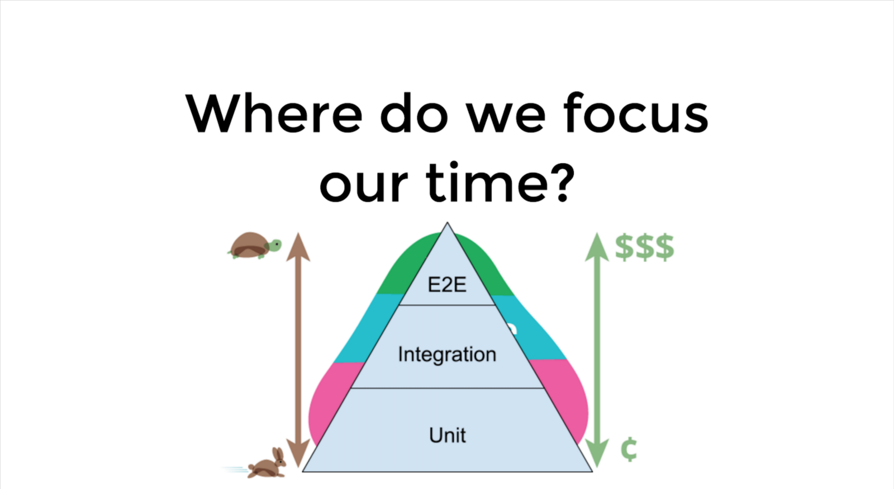
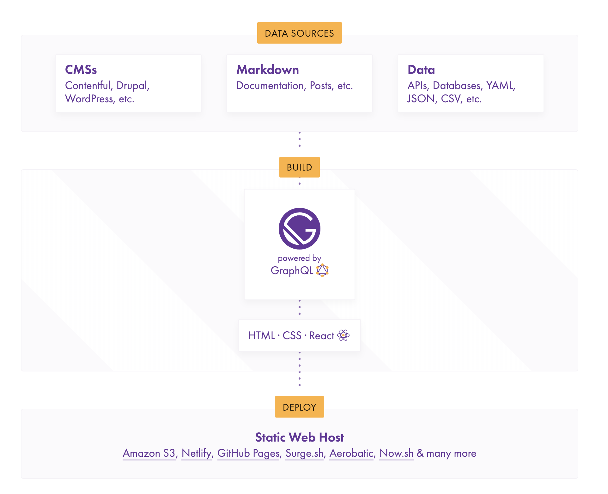
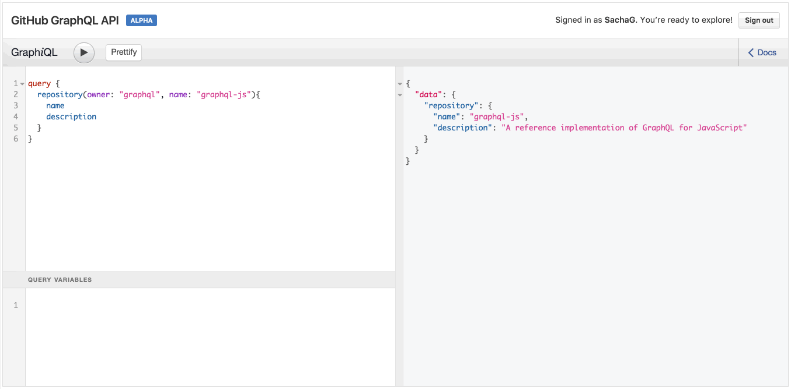
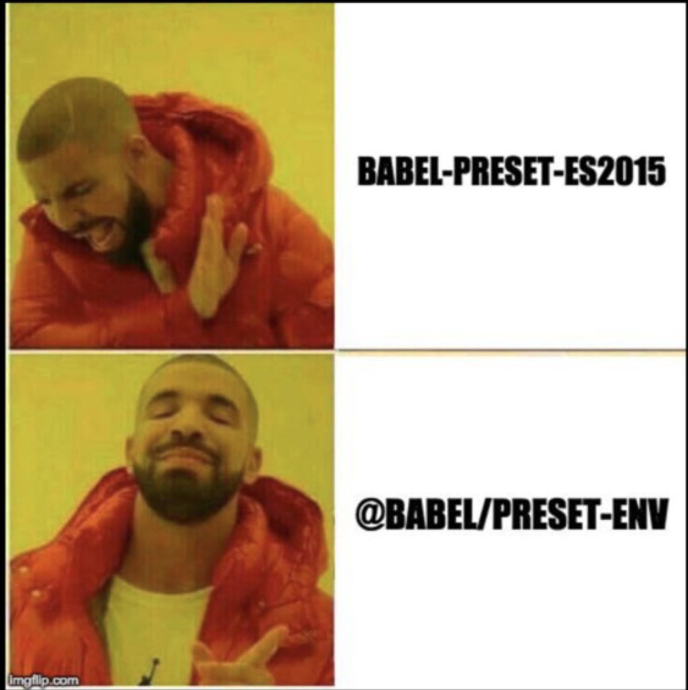
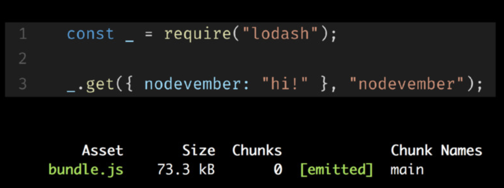
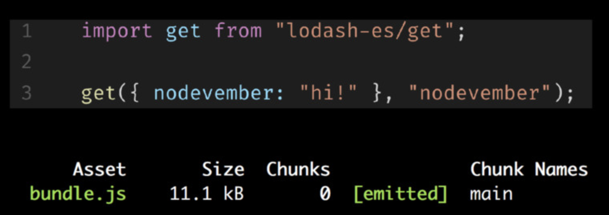
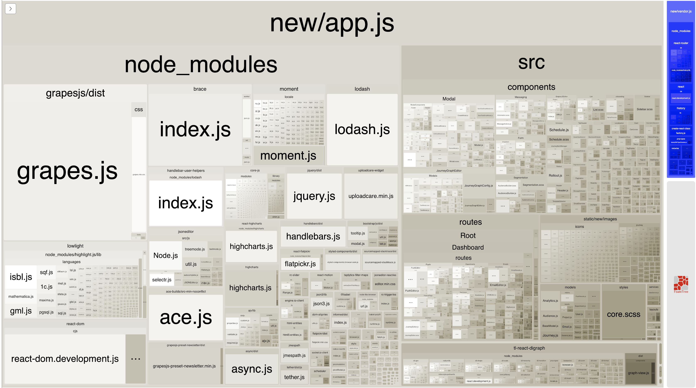
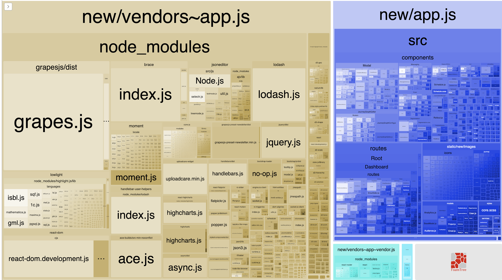

React Spotlight
Agenda
- Component Testing
- React && TypeScript
- Gatsby, React, and GraphQL
- The Delicate Power of Webpack and Babel
- Component Library
Component Testing
- Systems are too coupled to be effectively unit tested (Integration Tests)
- Focus on behaviour
- Avoid testing third party library functions
Integration Testing

- Unit tests work well in isolation
- Small group of units to test their behavior as a whole, verifying that they coherently work together
- Testing the data layer with UI
Integration Test
updateUser = (body) => {
const { user, updateUser } = this.props
const newUser = {
...user,
...body
}
return updateUser(newUser)
.then(() => {
this.setState({ fetching: false})
})
}
Integration Test
it('should call updateUser with first name updated', () => {
const expectedUser = {
firstName: 'Howdy',
lastName: 'Partner'
}
wrapper.instance().updateUser({ firstName: 'Howdy' })
expect(wrapper.instance().props.updateUser).toHaveBeenCalledWith(expectedUser)
})
Focus on Behaviour
export const searchFromList = (searchKey, list) => {
const matchName = (item, searchKey) => {
const actualText = _.isString(item) ? item.toLowerCase() : item.name.toLowerCase()
const searchText = searchKey.toLowerCase()
return actualText.includes(searchText)
}
const matchTag = (item, searchKey) => {
return !_.isString(item) && item.tags && item.tags.filter((tag) => matchName(tag, searchKey)).length
}
return searchKey.length ? _.filter(list, (item) => matchName(item, searchKey) || matchTag(item, searchKey)) : list
}
Focus on Behaviour
describe('searchFromList', () => {
const canada = { name: 'Canada', tags: ['earth', 'northAmerica'] }
const usa = { name: 'USA', tags: ['earth', 'northAmerica'] }
const mexico = { name: 'Mexico', tags: ['earth', 'northAmerica'] }
const messagingList = [canada, usa, mexico]
it('match name with search key', () => {
expect(searchFromList('can', messagingList)).toEqual([canada])
expect(searchFromList('uSa', messagingList)).toEqual([usa])
})
})

React && TypeScript

- Less errors due to type checking
- Catch errors early in editor
- Provides clearer vision
Fully Annotated TypeScript
function add(a: number, b: number) : number {
return a + b;
}

Interfaces
interface Person {
name: string;
hobbies: string[];
}
const teachers: Teacher[] = [
{
name: 'Ryan',
courses: ['Reading', 'Writing']
},
{
name: 'Simon',
courses: ['Basketball', 'Gym']
},{
name: 'Jordan',
courses: ['Music', 'Art']
}
];
React PropTypes
EventItem.propTypes = {
title: PropTypes.string.isRequired,
capacity: PropTypes.number.isRequired,
date: PropTypes.Date.isRequired
}
function EventItem(props) (
{props.title}
...
);
React PropTypes in TypeScript
interface Props {
title: string;
capacity: number;
date: Date;
}
function EventItem(props: Props) (
{props.title}
...
);
Gatsby, React, and GraphQL

- React-based, GraphQL powered, static site generator
- JAM Stack
- Out of box tools: fast page loads, service workers, code splitting, intelligent image loading, data prefetch
How it Works

GraphQL

The Delicate Power of Webpack and Babel

Tree Shaking


Code Splitting
- Process of taking one large bundle containing your entire app, and splitting them up into multiple smaller bundles which contain separate parts of your app.
- Route-based splitting vs. Component-based splitting
Bundle Splitting
Before

After

Component Library
- Reusable NPM Package
- Storybook or Styleguidist
- Living styleguide
- Automated releases and deploys